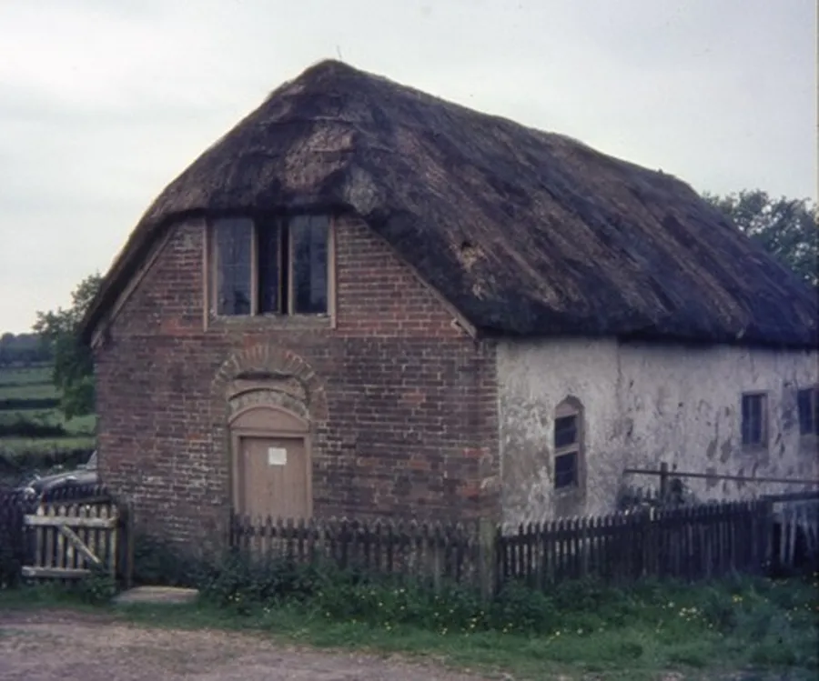
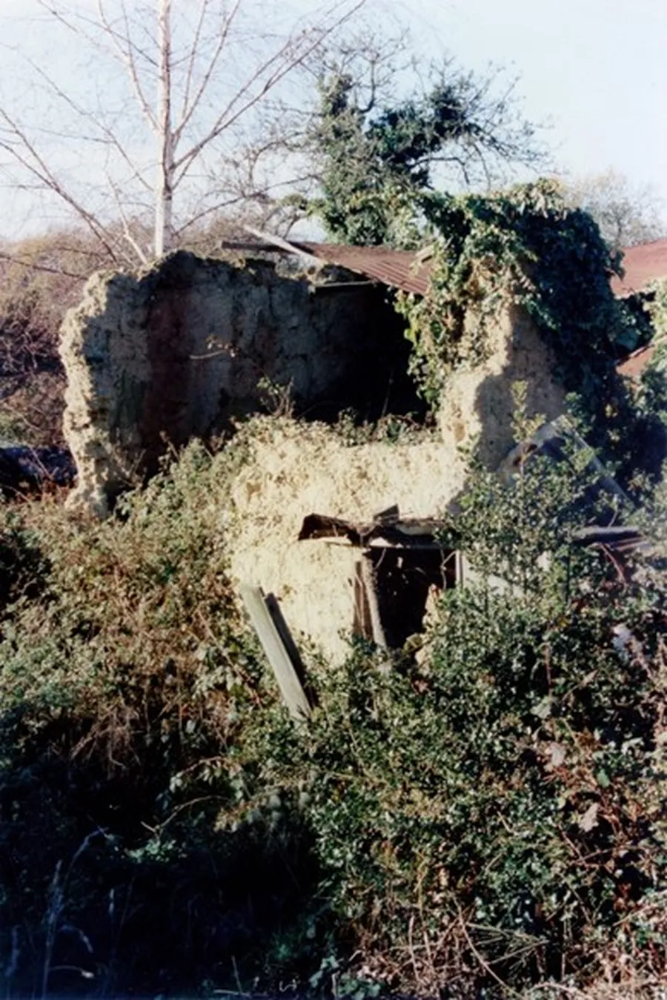
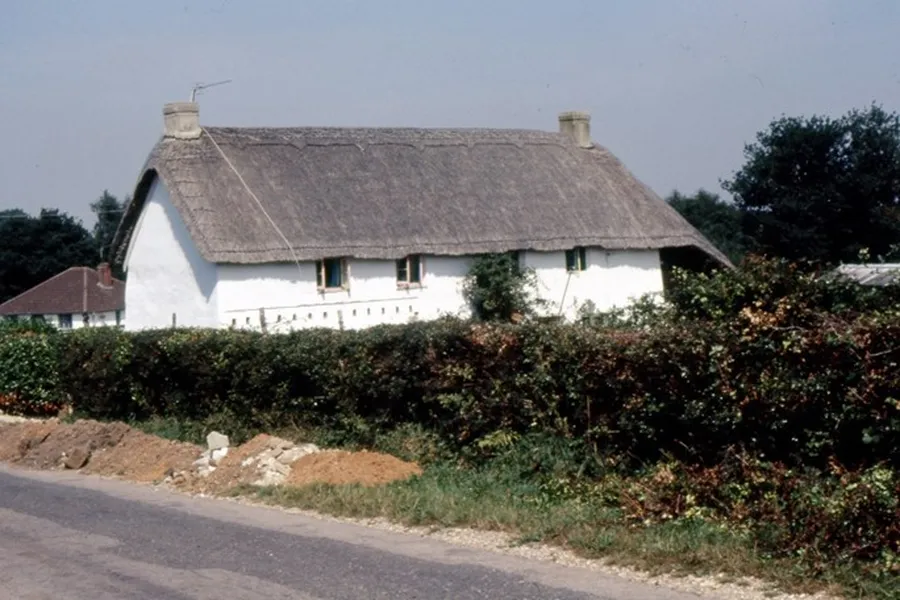
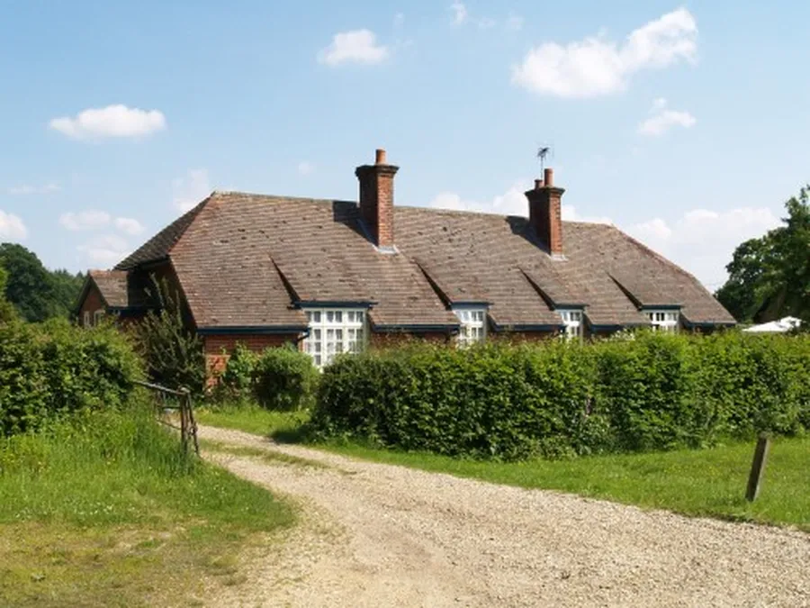
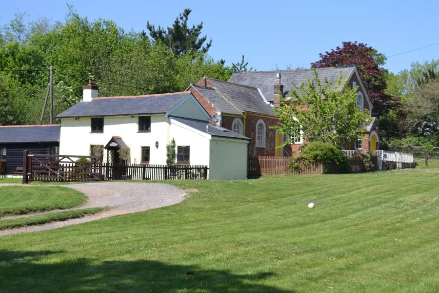

Cob
by Adrian King

Cob is a mixture of clay and heather used to make the walls of buildings. Many cottages and outbuildings were made from this material because everything was readily at hand on the common. The building was usually thatched.
Ebenezer Chapel at Cripplestyle was built using this method.

An old minute book says
“Upon land leased from the Marquis of Salisbury on three lives, by William Bailey, a place of worship was erected, the work being done by the people themselves. In the evening when the day’s work was over, men and women set themselves diligently to work, the men dipping and working the clay, the women getting heath from the common, with which to bind it together. So, by the self-denying, but willing labour of the people themselves, the structure rose.”

In Grampy by Pam Bailey, Sidney Frampton describes making a building from cob
“First you prepare your foundations, you dig them and then put in concrete. Some people used to put sandstone into the foundations, but this is not so good because later you tend to get cracks in the walls of the building in line with the joins in the sandstone.
Then you get a cartload of clay or loam and tip a cartload on to each way – where you intend the walls to be. Then you use water to make the clay wet and then tread the mixture well. You tread it first then turn it over with a prong and tread it again. When you’ve done that a time or two you put green heather into it. Heather is good because it never rots. Then you turn it again and keep on treading it and adding more heather until the texture is right.
That’s until it’s stiff enough to stay on the prong. Now you can start. You start by plumping it down on the wall eighteen inches wide all the way along the wall. Then you come back and build the wall up to eighteen inches high all along. You must do this in one day. Then do another wall in another day and so on until you have four walls at the end of the fourth day. On the fifth day – if it is dry enough – you can add another eighteen inches to the top of the first wall.
Of course, this is a job for the summertime as you must have dry weather. So you can see that this is a long and hard job. But for warmth you can’t beat a cob wall.”
In The New Forest Heywood Sumner says that the material should be
“Sandy, clayey loam with small stones in it: and with heath (heather), rushes, and sedge-grass, or straw, thoroughly puddled into the mass by trampling. In the best made mud walls this was dobbed and bonded by the mud-waller with his trident mud-prong in successive layers.
About two feet, vertical, being raised at a time, then left for ten days to dry” before the next layer was added. “Walls built thus on Heathstone (sandstone) or brick footings, stand well.”

Heywood complained of poor mud walls
“Raised without any footings and by inexperienced ‘mudders’ who used the wrong sort of clay. Who did not temper it still with heath and who could not build a wall with a mud-prong but trusted to board ‘clamps’ and thus this serviceable walling material has been discredited most unfairly.”
During the 1920’s the Cranborne Estate began demolishing cob buildings and replacing them with the standard semi-detached bungalows that are common in the Cripplestyle area.

Evergreen Cottage was one of the cottages that sprung up during the 1800’s along Station Road. Like most of these cottages it was built of Cob with a flint foundation but had a slate roof and stood in a plot of about 2 acres. The original building was basically two up two down.

During the 1940’s Mrs. Georgina Wallis owned it and let it to Mrs. Ada Wiseman. Mr. Eric Wallis who was Mrs. Georgina Wallis’ son and Mrs. Ada Wiseman’s son in law brought the property in 1949. He was not allowed to knock it down and build new so he modernised it building a new wing at the rear. He also renamed the house Inglenook. Peter Wallis bought the house from his father in 1956 and lived there until 1993 when Sherings bought it and demolished it so that the land could be redeveloped. A number of houses stand on that plot of land now.
Cob Buildings in the Parish
| Fordingbridge Road / Wolvercroft | |
| Wolvercrate Cottages | Demolished |
| Red Lion Cottage | Part only due to additions |
| Martha’s Cottage | Demolished and rebuilt |
| Vine Cottage | Part only due to additions |
| Rose Cottage Grounds | Demolished |
| Plot opposite Red Lion Cottage | Demolished |
| Sandleheath Road | |
| Cross Roads Farm | Demolished and rebuilt |
| Holly Cottage | Demolished |
| Hill Farm Cottage Workshop | Demolished |
| Home Farm | Part only due to additions |
| Hillside Cottage | Part only due to additions |
| Station Road / Hillbury Road | |
| 159 Station Road | Demolished and rebuilt |
| Evergreen Cottage | Demolished |
| Hillbury Cottage – Wren Cottage | Current |
| Daggons Road | |
| St. James School Classroom | Demolished |
| Church Farmhouse | Part only due to additions |
| House between Church and Woodside | Demolished |
| Cob Barn at Daggons Farm – Woodside | Demolished |
| Fern Hill Farm | Demolished and rebuilt |
| Broxhill / Crendell / Lower Daggons / Bull Hill | |
| Hither Daggons | Part only due to additions |
| Cob wall at Corner Wood where there was once a building now demolished | Remains |
| Old Pond Farm House | Part only due to additions |
| Lopshill Cottage, next to Crendell Methodist Chapel | Part only due to additions |
| Lower Daggons Cottage | Part only due to additions |
| Higher Bull Hill Farm | Part only due to additions |
| Hawk Hill Mill | Part only due to additions |
| Cripplestyle | |
| Ebenezer Chapel | Collapsed in 1976 |
| Remains of house at Cripplestyle possibly a shop | Still there in 2001 but now demolished |